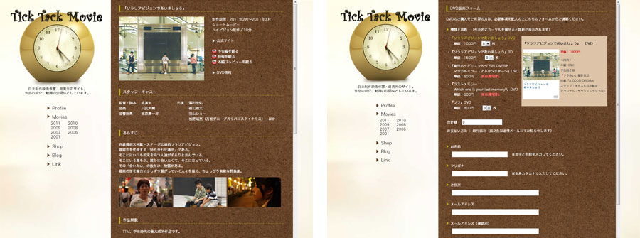

映画制作プロジェクト「Tick Tack Movie」Webサイト リニューアル
自主制作映画作家・堤真矢さんを中心とする映画制作プロジェクト「Tick Tack Movie」の
Webサイトのリニューアルを担当しました。
- 制作期間
- 2011年10月中旬（約1週間）
- 使用ツール
- Illustrator / Photoshop / Dreamweaver
- 目的
- 作品が観やすい、すっきりしたWebサイト
- 備考
- 単独制作

自主制作映画作家・堤真矢さんを中心とする映画制作プロジェクト「Tick Tack Movie」の
Webサイトのリニューアルを担当しました。